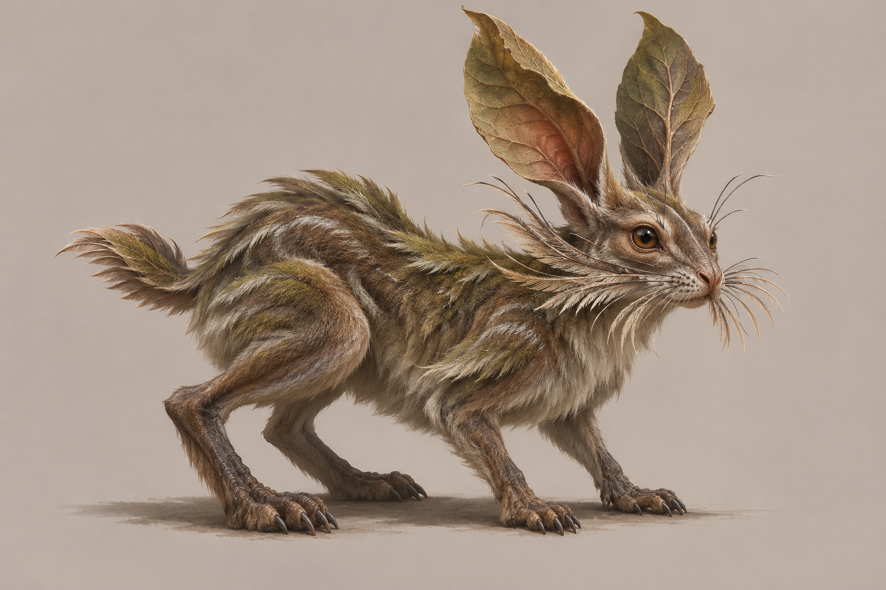
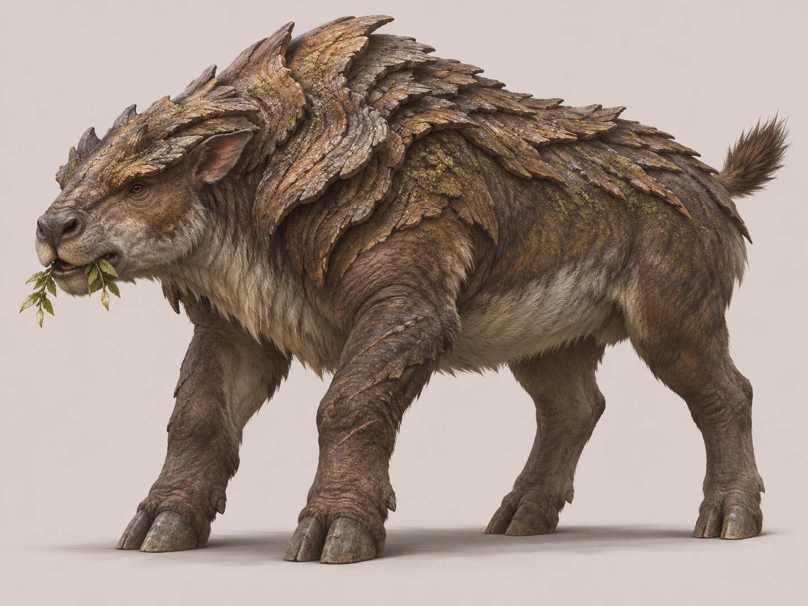
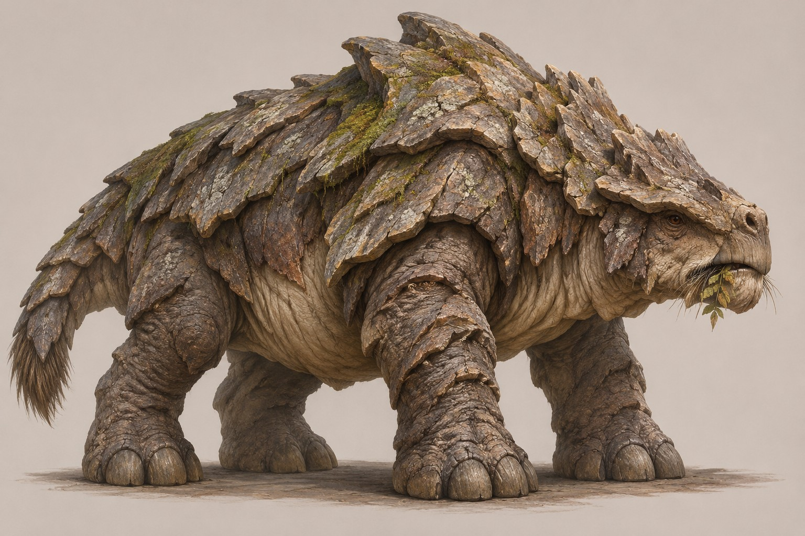
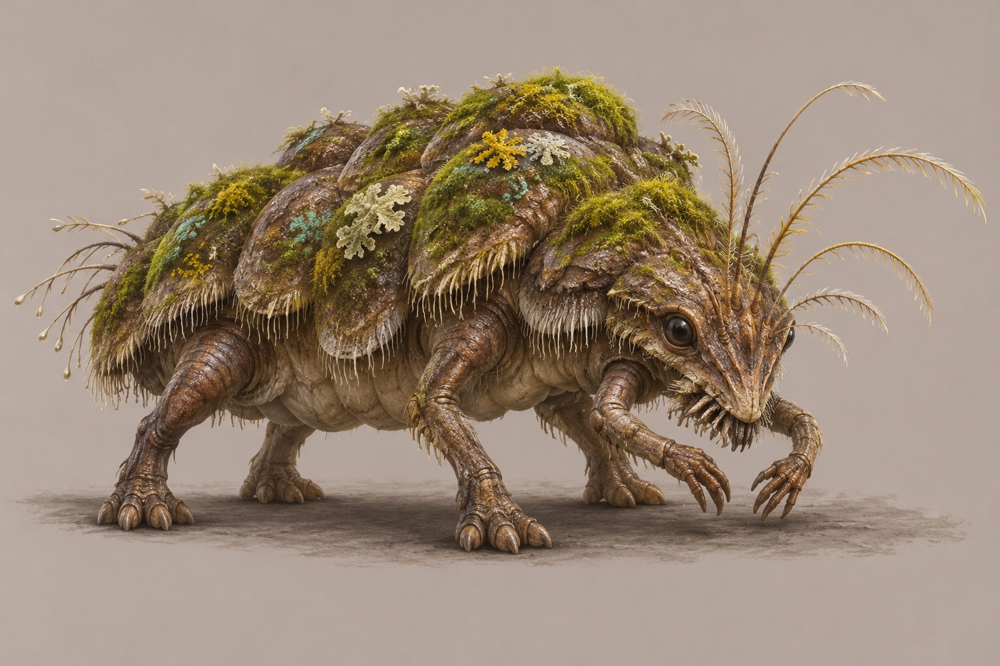
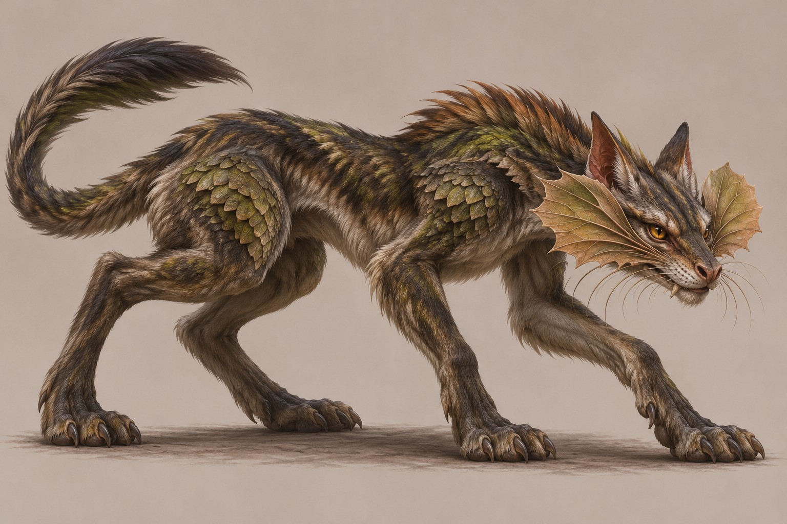
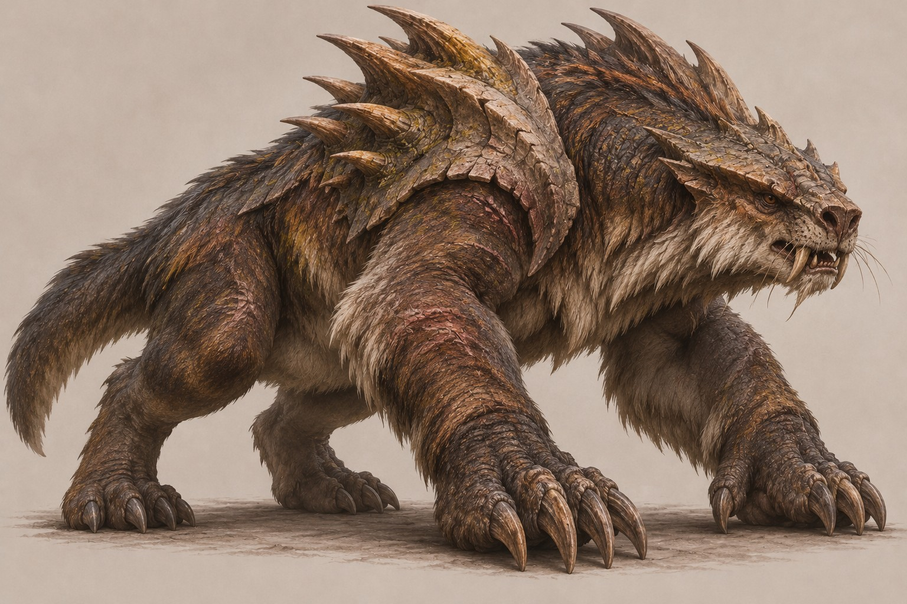
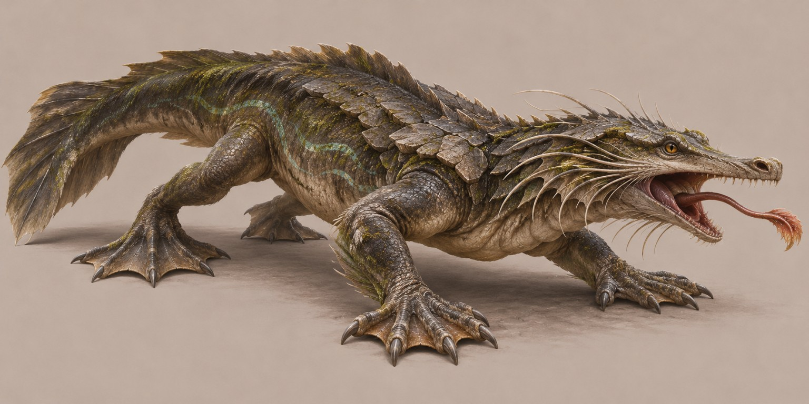
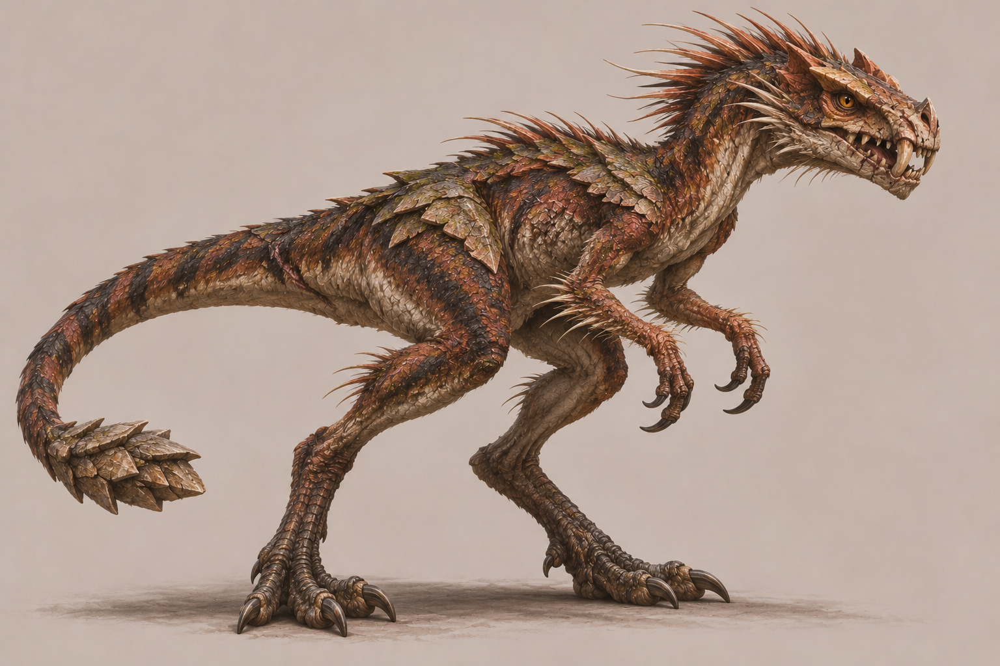
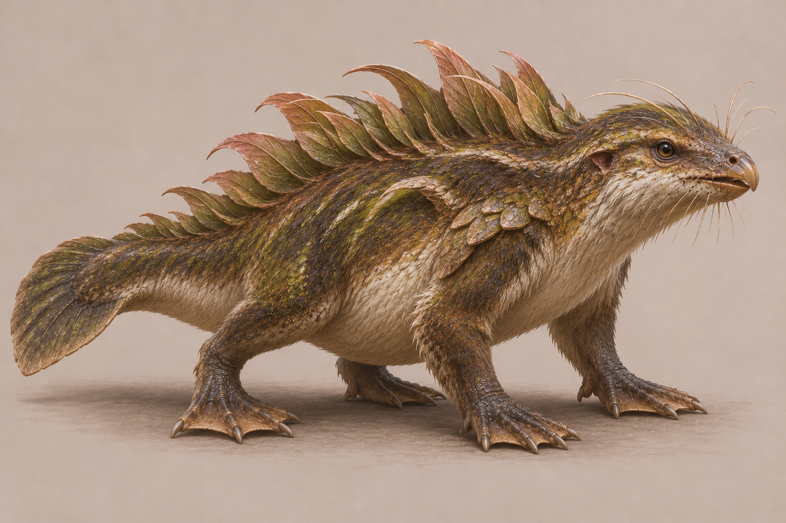
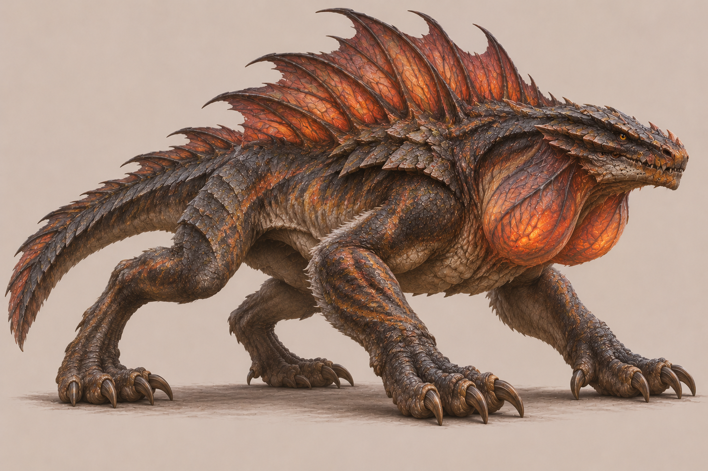

Fısıltı Tavşanı
Yaprak damarlı döner kulaklar, titreşim algılayan yanak yelpazeleri ve yana sıçramaya uygun güçlü arka bacaklar.
Anatomi ve üretim notları →
Kabuk Sırtı
Üst sırtı organik kabuk katmanlarıyla korunan, çalıları yarıp ilerleyen, alçak ağırlık merkezli otçul.
Anatomi ve üretim notları →
Taşkabuk
Mineralize taşsı plakalı, açık renk yumuşak karın bölgesi bulunan ağır ve dirençli megafauna.
Anatomi ve üretim notları →
Yosun Gezginciği
Yosun yastıklarını taklit eden keratin kabarcıklı, dört yürüyüş ve iki beslenme uzvu olan küçük tarayıcı.
Anatomi ve üretim notları →
İz Avcısı
Yanaklarından açılan çift koku yelpazesi, sessiz ayak tabanları ve uzun denge kuyruğuyla takipçi.
Anatomi ve üretim notları →
Diken Omuz
Kazmaya uygun iri ön pençeler ve geriye dönük kısa dikenler taşıyan çift omuz kalkanı.
Anatomi ve üretim notları →
Dere Pusucusu
Yassı başlı, su çizgisinde görebilen gözlü ve kuyruktan güçlü itiş alan pusu avcısı.
Anatomi ve üretim notları →
Kırıkdiş
Asimetrik kırık dişleri, güçlü koşucu arka bacakları ve küçük mineralize kuyruk topuzu olan fırsatçı.
Anatomi ve üretim notları →
Saz Sırtı
Yumuşak saz biçimli sırt saçakları, kısmen perdeli ayakları ve yüzme kuyruğuyla sosyal gezgin.
Anatomi ve üretim notları →
Közboğaz
Boynunda iki ısı kesesi ve sırtında ısı tahliye zarları bulunan biyomagik avcı.
Anatomi ve üretim notları →Bir yaratık nasıl tasarlanır?
Asıl adım adım öğretici: TAMU Lore'dan özgün canlı tasarımına rehber. Bu katalog aynı yöntemin mevcut tür ve görsel örneklerini sunar; sayısal simülasyon puanları gerçek biyolojik sonuçlar değildir.
Ekolojik işlev → okunur silüet → desteklenen eklemler → biyolojik dokular → animasyona hazırlık → oyun ölçeği kontrolü. Sayfalardaki kararlar, özgün ama işlevsel bir fantastik canlı geliştirmenin tekrar kullanılabilir sürecini anlatır.
Görseli eksik türlerin sayfaları erişilebilir; kaynak görsel uydurulmamıştır.